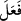

olmuştur. Hatta onlar tabiatlarının aşağılığı yüzünden birbirlerine düşmanlık ederler.
Tıpkı küfürde hemcins oldukları halde ülfette birbirlerinden ayrı, düşmanlıkta ve
birbirlerini öldürmede beraber olan Bizanslılar ve Farslar gibi. Âlemlerin Rabbi’nin
mağfireti, O’nun her şeyi içine alan kereminden ve ezeli ihsânından ileri geldiğinden, bu
iki gruptan azgınlık yapanın tevbesini kabul eder. Onun mağfireti her iki fırkayı da içine
alacak derecede geniştir. “Allah bütün günahları bağışlar.” (ez-Zümer, 39/53) hitâbı
iki tâife için de umumidir.”
Keşfü”l-esrâr’da der ki: “Elif. Lâm. Mîm” Büyüklüğümüzü tanıyan imtihanlarımıza
ülfet eder/alışır. Cemâlimizi gören kapımızdan ayrılmaz. Hizmetimize devam eden
yakınlığımıza erdirilir.
Ey genç, gönlünü Allâh’ın zikrine ve tevhîdine teslim et. Canını O’nun aşk ve
muhabbetiyle meşgul et. O’nun dışındakilere iltifat etme. Kim O’ndan gayriye dönüp
bakarsa, gayret kılıcı o kimseyi helâk eder. Kim Cenâb-ı Hakk’ın gönderdiği belâlardan
inler, feryat ederse, dostluk dâvâsında samîmî değildir.
Eski zamanlarda, Âmir b. Kays adında din sultanlarının büyüklerinden bir adam
vardı. Rivâyet edildiğine göre nafile namazlardan ayaklarına kan inmiş/kangren
olmuştu. Kendisine (doktorlar), ayaklarını kes de bu hastalık artmasın dediler. Şu
cevabı verdi: “Abdülkays’ın oğlu kim oluyor da ihtiyarı/irâdesi Hakk’ın
ihtiyarının/irâdesinin üzerine olsun?” Bir müddet sonra farz ve nafileleri edâ etmekte
sıkıntı güçlük olunca, yüzünü semaya çevirdi ve şöyle seslendi: “Ey Sultânım! Belâya
tâkatim ve tahammülüm olsa da hizmet ve kulluktan geri kalmaya tâkat ve tahammülüm
yok. Ayağımı keserim de kulluktan geri durmam.”
Ardından, “Birisini çağırın da Kur’an’dan bir âyet okusun. O okurken bende vecd ve
semâ hâli meydana gelirse, siz işinize bakarsınız.” dedi. Ayaklarını kestiler, kesilen yeri
de dağladılar. O ulu kişi vecd ve semâ hâlinde öyle kendinden geçmişti ki o elemden
haberi bile olmadı. Âyeti okuyan susup şeyh kendine gelince şunları söyledi: “Bu
kesilen ayağı gülsuyu ile yıkayınız, misk ve kâfurla kokulandırınız. Çünkü dergâh-ı
ilâhiyyede kulluk ve hizmette asla vefâsızlık etmedi.
Fakîr (Bursevî) der ki: “Elif. Lâm. Mîm”in “Elif”i bütün taayyünâtın başlangıç yeri
olan emr âlemine, “Lâm” varlık mertebeleri (vücûdiyyât) arasında vâsıta (vasat) olan
ruhlar âlemine, “Mîm” ise tenezzülât ve istirsâlâtın sonu olan mülk âlemine işârettir. “__WORD__ kelimesi Nahiv ehline göre boğaz, boğazın ortası ve ağız olmak üzere üç mahrecin
harflerinden meydana geldiği gibi Mahv ehline (sûfîlere) göre “Elif. Lâm. Mîm”
ceberût, melekût ve mülk olmak üzere üç mertebenin harflerini ihtivâ etmektedir. İki
grubun iki mânevî kelimesi arasında fark olduğu gibi iki lafzî kelimesi arasında da fark
vardır. Çünkü mahv ehlinin kelimesi düzgün ve tertibi yerinde, nahv ehlinin kelimesi ise
eğri ve tertibi bozuktur.
Hurûf-i mukattaa ve Kur’an’ın müteşâbih âyetlerinin sırları, ehlüllâha mertebelerin
sonuna ulaştıktan sonra keşfolunan şeylerdendir. Her ne kadar onların bir kısmı yâni
yolun ortasında olanlar (ehlü’l-vasat) için hâsıl olsa da, işin zâhirine dalanlar ve